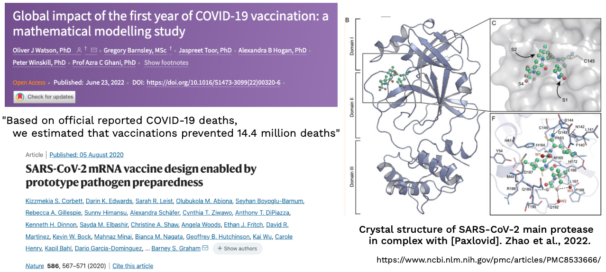
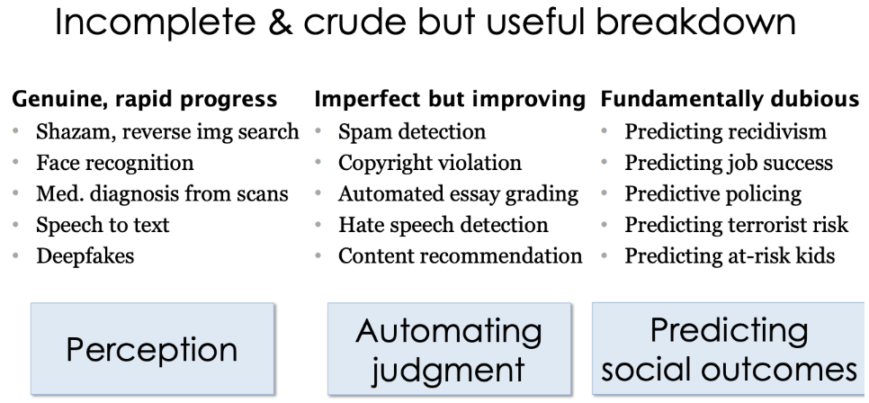

Lecture 9: Ethics
Lecture by Charles Frye.
Notes by James Le and Vishnu Rachakonda.
Published October 03, 2022.
Download slides.
In this final lecture of FSDL 2022, we'll talk about ethics. After going through the context of what we mean by ethics, we'll go through three different areas where ethics come up:
-
Tech Ethics: ethics that anybody who works in the tech industry broadly needs to think about.
-
ML Ethics: what ethics has specifically meant for the ML industry.
-
AI Ethics: what ethics might mean in the future where true AGI exists.
1 - Overview and Context
All ethics lectures are wrong, but some are useful. They are more useful if we admit and state what our assumptions or biases are. We'll also talk about three general themes that come up often when ethical concerns are raised in tech/ML: alignment, trade-offs, and humility.
In this lecture, we'll approach ethics on the basis of concrete cases - specific instances where people have raised concerns. We'll talk about cases where people have taken actions that have led to claims and counter-claims of ethical or unethical behavior - such as the use of automated weapons, the use of ML systems to make decisions like sentencing and bail, and the use of ML algorithms to generate art. In each case when criticism has been raised, part of that criticism has been that the technology is unethical.
Approaching ethics in this way allows us to answer the question of "What is ethics?" by way of Ludwig Wittgenstein's quote: "The meaning of a word is its use in the language." We'll focus on times when people have used the word "ethics" to describe what they like or dislike about a specific technology.
If you want to try it out for yourself, you should check out the game "Something Something Soup Something." In this browser game, you are presented with a bunch of dishes and have to decide whether they are soup or not soup, as well as whether they can be served to somebody who ordered soup. By playing a game like this, you'll discover (1) how difficult it is to come up with a concrete definition of soup and (2) how poorly your working definition of soup fits with any given soup theory.
Because of this case-based approach, we won't be talking about ethical schools or "trolley" problems. Rather than considering these hypothetical scenarios, we'll talk about concrete and specific examples from the past decade of work in our field and adjacent fields.
If you want another point of view that emphasizes the trolley problems, you should check out Sergey's lecture from the last edition of the course from 2021. It presented similar ideas from a different perspective and came to the same conclusion and some different conclusions.
A useful theme from that lecture that we should all have in mind when we ponder ethical dilemmas is "What Is Water?" - which came up from a famous commencement speech by David Foster Wallace. If we aren't thoughtful and paying attention, things that are very important can become background, assumptions, and invisible to us.
The approach of relying on prominent cases risks replicating social biases. Some ethical claims are amplified and travel more because people (who are involved) have more resources and are better connected. Using these forms of case-based reasoning (where you explain your beliefs in concrete detail) can hide the principles that are actually in operation, making them disappear like water.
But in the end, so much of ethics is deeply personal that we can't expect to have a perfect approach. We can just do the best we can and hopefully become better every day.
2 - Themes
We'll see three themes repeatedly coming up throughout this lecture:
-
Alignment: a conflict between what we want and what we get.
-
Trade-Offs: a conflict between what we want and what others want.
-
Humility: a response when we don't know what we want or how to get it.
Alignment
The problem of alignment (where what we want and what we get differ) come up over and over again. A primary driver of this is called the proxy problem - in which we often optimize or maximize some proxies for the thing that we really care about. If the alignment (or loosely the correlation between that proxy and the thing we care about) is poor enough, then by trying to maximize that proxy, we can end up hurting the thing we originally cared about.
There was a recent paper that did a mathematical analysis of this idea. You can see these kinds of proxy problems everywhere once you look for them.
-
On the top right, we have a train and validation loss chart from one of the training runs for the FSDL text recognizer. The thing we can optimize is the training loss. That's what we can use to calculate gradients and improve the parameters of our network. But the thing we really care about is the performance of the network on data points that it has not seen (like the validation set, the test set, or data in production). If we optimize our training loss too much, we can actually cause our validation loss to go up.
-
Similarly, there was an interesting paper suggesting that increasing your accuracy on classification tasks can actually result in a decrease in the utility of your embeddings in downstream tasks.
-
You can find these proxy problems outside of ML as well. This thread reveals an example where a factory that was making chemical machines (rather than creating a machine that was cheaper and better) chose not to adopt producing that machine because their output was measured in weight. So the thing that the planners actually cared about, economic efficiency and output, was not optimized because it was too difficult to measure.
One reason why these kinds of proxy problems arise so frequently is due to issues of information. The information that we are able to measure is not the information that we want. At a higher level, we often don't know what it is that we truly needed. We may want the validation loss, but what we need is the loss in production or really the value our users will derive from this model.
Trade-Offs
Even when we know what we want or what we need, we are likely to run into the second problem - the tradeoff between stakeholders. It is sometimes said that the need to negotiate tradeoffs is one of the reasons why engineers do not like thinking about some of these problems around ethics. That's not quite right because we do accept tradeoffs as a key component of engineering.
-
In this O'Reilly book on the fundamentals of software architecture, the first thing they state at the beginning is that everything in software architecture is a tradeoff.
-
This satirical O'Reilly book says that every programming question has the answer: "It depends."

The famous chart above compares the different convolutional networks on the basis of their accuracy and the number of operations to run them. Thinking about these tradeoffs between speed and correctness is exactly the thing we have to do all the time in our job as engineers.
We can select the Pareto Front for the metrics we care about. A way to remember what a Pareto front is this definition of a data scientist from Josh Wills: "Person who is better at statistics than any software engineer and better at software engineering than any statistician." The Pareto Front in the chart above includes the models that are more accurate than those with fewer FLOPs and use fewer FLOPs than those that are more accurate.
A reason why engineers may dislike thinking about these problems is that it's hard to identify and quantify these tradeoffs. These are indeed proxy problems. Even further, once measured, where on that front do we fall? As engineers, we may develop expertise in knowing whether we want high accuracy or low latency, but we are not as comfortable deciding how many current orphans we want to trade for what amount of future health. This raises questions both in terms of measurement and decision-making that are outside of our expertise.
Humility
The appropriate response is humility because most engineers do not explicitly train in these skills. Many engineers and managers in tech, in fact, constitutionally prefer optimizing single metrics that are not proxies. Therefore, when encountering a different kind of problem, it's important to bring a humble mindset, ask for help from experts, and recognize that the help you get might not be immediately obvious to what you are used to.
Additionally, when intervening due to an ethical concern, it's important to remember this humility. It's easy to think that when you are on the good side, this humility is not necessary. But even trying to be helpful is a delicate and dangerous undertaking. We want to make sure that as we resolve ethical concerns, we come up with solutions that are not just parts of the problem.
User Orientation Undergirds Each Theme
We can resolve all of these via user orientation.
-
By getting feedback from users, we maintain alignment between our system and our users.
-
When making tradeoffs, we should resolve them in consultation with users.
-
Humility means we actually listen to our users because we recognize we don't have the answers to all the questions.
3 - Tech Ethics
The tech industry can't afford to ignore ethics as public trust in tech declines. We need to learn from other nearby industries that have done a better job on professional ethics. We'll also touch on some contemporary topics.
Tech Industry's Ethical Crisis
Throughout the past decade, the tech industry has been plagued by scandal - whether that's how tech companies interface with national governments at the largest scale or how tech systems are being used or manipulated by people who create disinformation or fake social media accounts that hack the YouTube recommendation system.
As a result, distrust in tech companies has risen markedly in the last ten years. This Public Affairs Pulse survey shows that in 2013, the tech industry was one of the industries with less trustworthiness on average. In 2021, it has rubbed elbows with famously more distrusted industries such as energy and pharmaceuticals.
Politicians care quite a bit about public opinion polls. In the last few years, the fraction of people who believe that large tech companies should be more regulated has gone up a substantial amount. Comparing it to 10 years ago, it's astronomically higher. So there will be a substantial impact on the tech industry due to this loss of public trust.
We can learn from nearby fields: from the culture of professional ethics in engineering in Canada (by wearing the Iron Ring) to ethical standards for human subjects research (Nuremberg Code, 1973 National Research Act). We are at the point where we need a professional code of ethics for software. Hopefully, many codes of ethics developed in different communities can compete with each other and merge into something that most of us can agree on. That can be incorporated into our education for new members of our field.
Let's talk about two particular ethical concerns that arise in tech in general: carbon emissions and dark/user-hostile design patterns.
Tracking Carbon Emissions
Because carbon emissions scale with cost, you only need to worry about them when the costs of what you are working on are very large. Then you won't be alone in making these decisions and can move a bit more deliberately to make these choices more thoughtfully.
Anthropogenic climate change from carbon emissions raises ethical concerns - tradeoffs between the present and future generations. The other view is that this is an issue that arises from a classic alignment problem: many organizations are trying to maximize their profit, which is based on prices for goods that don't include externalities (such as environmental damage caused by carbon emissions, leading to increased temperatures and lactic change).
The primary dimension along which we have to worry about carbon emissions is in compute jobs that require power. That power can result in carbon emissions. This paper walks through how much carbon dioxide was emitted using typical US-based cloud infrastructure.
-
The top headline shows that training a large Transformer model with neural architecture search produces as much carbon dioxide as five cars create during their lifetimes.
-
It's important to remember that power is not free. On US-based cloud infrastructure, \$10 of cloud spent is roughly equal to \$1 of air travel costs. That's on the basis of something like the numbers and the chart indicating air travel across the US from New York to San Francisco.
-
Just changing cloud regions can actually reduce your emissions quite a bit. There's a factor of 50x from regions with the most to least carbon-intensive power generation.
The interest in this problem has led to new tools. Codecarbon.io allows you to track power consumption and reduce carbon emissions from your computing. ML CO2 Impact is oriented directly towards machine learning.
Deceptive Design and Dark Patterns
The other ethical concern in tech is deceptive design. An unfortunate amount of deception is tolerated in some areas of software. As seen below, on the left is a nearly complete history of the way Google displays ads in its search engine results. It started off very clearly colored and separated out with bright colors from the rest of the results. Then about ten years ago, that colored background was removed and replaced with a tiny little colored snippet that said "Ad." Now, as of 2020, that small bit is no longer even colored. It is just bolded. This makes it difficult for users to know which content is being served to them because somebody paid for it (versus content served up organically).
A number of dark patterns of deceptive design have emerged over the last ten years. You can read about them on the website called deceptive.design. There's also a Twitter account called \@darkpatterns that shares examples found in the wild.
A practice in the tech industry that's on a very shaky ethical /legal ground is growth hacking. This entails a set of techniques for achieving rapid growth in user base or revenue for a product and has all the connotations you might expect from the name - with examples including LinkedIn and Hotmail.
ML can actually make this problem worse if we optimize short-term metrics. These growth hacks and deceptive designs can often drive user and revenue growth in the short term but worsen user experience and draw down on goodwill towards the brand in a way that can erode the long-term value of customers. When we incorporate ML into the design of our products with A/B testing, we have to watch out to make sure that the metrics that we are optimizing do not encourage this kind of deception.
These arise inside another alignment problem. One broadly-accepted justification for the private ownership of the means of production is that private enterprise delivers broad social value aligned by price signals and market focus. But these private enterprises optimize metrics that are, at best, a proxy for social value. There's the possibility of an alignment problem where companies pursuing and maximizing their market capitalization can lead to net negative production of value. If you spend time at the intersection of funding, leadership, and technology, you will encounter it.
In the short term, you can push for longer-term thinking within your organization to allow for better alignment between metrics and goals and between goals and utility. You can also learn to recognize user-hostile designs and advocate for user-centered design instead.
To wrap up this section on tech ethics:
-
The tech industry should learn from other disciplines if it wants to avoid a trust crisis.
-
We can start by educating ourselves about common deceptive or user-hostile practices in our industry.
4 - ML Ethics
The ethical concerns raised about ML have gone beyond just the ethical questions about other kinds of technology. We'll talk about common ethical questions in ML and lessons learned from Medical ML.
Why Not Just Tech Ethics?
ML touches human lives more intimately than other technologies. Many ML methods, especially deep neural networks, make human-legible data into computer-legible data. Humans are more sensitive to errors and have more opinions about visual and text data than they do about the type of data manipulated by computers. As a result, there are more stakeholders with more concerns that need to be traded off in ML applications.
Broadly speaking, ML involves being wrong pretty much all the time. Our models are statistical and include "randomness." Randomness is almost always an admission of ignorance. As we admit a certain degree of ignorance in our models, our models will be wrong and misunderstand situations that they are put into. It can be upsetting and even harmful to be misunderstood by our models.
Against this backlash of greater interest or higher stakes, a number of common types of ethical concerns have coalesced in the last couple of years. There are somewhat established camps of answers to these questions, so you should at least know where you stand on the four core questions:
-
Is the model "fair"?
-
Is the system accountable?
-
Who owns the data?
-
Should the system be built at all?
Common Ethical Questions in ML
Is The Model "Fair"?
The classic case on this comes from criminal justice with the COMPAS system for predicting whether a defendant will be arrested again before trial. If they are arrested again, that suggests they committed a crime during that time. This assesses a certain degree of risk for additional harm while the justice system decides what to do about a previous arrest and potential crime.
The operationalization here was a 10-point re-arrest probability based on past data about this person, and they set a goal from the very beginning to be less biased than human judges. They operationalize that by calibrating these arrest probabilities across subgroups. Racial bias is a primary concern in the US criminal justice system, so they took care to make sure that these probabilities of re-arrest were calibrated for all racial groups.
The system was deployed and used all around the US. It's proprietary and difficult to analyze. But using the Freedom of Information Act and coalescing together a bunch of records, people at ProPublica were able to run their own analysis of this algorithm. They determined that the model was not more or less wrong for one racial group or another. It tended to have more false positives for Black defendants and more false negatives for White defendants. So despite the creators of COMPAS taking into account bias from the beginning, they still ended up with an algorithm with this undesirable property of being more likely to falsely accuse Black defendants than White defendants.
It turned out that some quick algebra revealed that some form of race-based bias is inevitable in this setting, as indicated in this paper. There are a large number of fairness definitions that are mutually incompatible. This tutorial by Arvind Narayanan is an excellent one to display them.
It is noteworthy that the impact of "unfairness" is not fixed. The story is often presented as "no matter what, the journalists would have found something to complain about." But note that equalizing false positive rates and positive predictive value across groups would lead to a higher false negative rate for Black defendants relative to White defendants. In the context of American politics, that's not going to lead to complaints from the same people.
This is the story about the necessity of confronting the tradeoffs that will inevitably come up. Researchers at Google made a nice little tool where you can think through and make these tradeoffs for yourself. It's helpful for building intuition on these fairness metrics and what it means to pick one over the other.
Events in this controversy kicked off a flurry of research on fairness. The Fairness, Accountability, and Transparency conference has been held for several years. There has been a ton of work on both algorithmic-level approaches on measuring and incorporating fairness metrics into training and qualitative work on designing systems that are more transparent and accountable.
In the case of COMPAS, re-arrest is not the same as recidivism. Being rearrested requires that a police officer believes you committed a crime. Police officers are subject to their own biases and patterns of policing, which result in a far higher fraction of crimes being caught for some groups than for others. Our real goal, in terms of fairness and criminal justice, might be around reducing those kinds of unfair impacts and using past rearrest data that have these issues.
Representation Matters for Model Fairness
Unfortunately, it is easy to make ML-powered tech that fails for minoritized groups. For example, off-the-shelf computer vision tools often fail on darker sins (as illustrated in this talk by Joy Buolamwini). This is not a new issue in technology, just a more salient one with ML.
There has been a good amount of progress on this in the last five years. An example is Google's Model Cards which show how well a model will perform on human subgroups of interest. HuggingFace has good integrations for creating these kinds of model cards.
When you invite people for talks or hire people to join your organizations, you should work to reduce the bias of that discovery process by diversifying your network. Some good resources include Black in AI, Diversify Tech Job Board, Women in Data Science, and the You Belong in AI podcast. You can make professional connections via them to improve the representation of minoritized groups in the engineering, design, and product management process.
Is The System Accountable?
At a broader level than fairness, we should expect "accountability" from ML systems. Some societies and states, including the EU, consider "the right to an explanation" in the face of important judgments to be a part of human rights.
In the GDPR act, there is a section that enshrines accountability. This isn't quite a totally new requirement; credit denials in the US have been required to be explained since 1974. People have a right to know what and why into making decisions for them!
If you want to impose this "accountability" on a deep neural network and understand its selections, there are a number of methods that use the input-output gradient to explain the model. You can see a list of several methods in order of increasing performance below (from this paper). These approaches don't quite have strong theoretical underpinnings or a holistic explanation, and are not that robust as a result. A lot of these methods act primarily as edge detectors. The paper shows how even randomizing layers in a model does not materially change the interpretability output of GradCAM methods.
As a result, introspecting DNNs effectively requires reverse engineering the system to really understand what is going on, largely thanks to efforts like Distil and Transfomer Circuits.
Due to these technical challenges, machine learning systems are prone to unaccountability that impacts most those least able to understand and influence their outputs. Books such as Automating Inequality describe the impacts of these systems. In such a context, you should seek to question the purpose of model, involve those impacted by the decisions (either through direct human inputs or through other means), and ensure that equal attention is paid to benefits and harms of automation.
Who Owns The Data?
Humans justifiably feel ownership of the data they create, which is subsequently used to train machine learning models. Large datasets used to train models like GPT-3 are created by mining this data without the explicit involvement of those who create the data. Many people are not aware that this is both possible and legal. As technology has changed, what can be done with data has changed.
You can even verify if your data has been used to train models on. Some of these images are potentially obtained illegally, as a result of sensitive data being posted openly without the recorded consent of the originator.

Each of these controversies around image generation and illegal data has opened up a new frontier in data governance. Focus will be placed on ensuring new ML systems are sensitive to personal and professional concerns of those who generate the data ML systems are trained on. Emad Mostaque, CEO of Stability AI, has gone so far as to offer future opt out systems from systems similar to Stable Diffusion.
Here are some practical tips: Dataset cards can be helpful in providing documentation in a similar fashion to model cards. There are also ethics lists, like the deon ethic checklist that helps design proper systems. Deon also has a helpful list of failure cases.
Should This Be Built At All?
The undercurrent behind this conversation is the justifiable question of whether some of these systems should be built at all, let alone in an ethical way.
ML-powered weaponry is the canonical example here, which is already in use. The definition of these systems are blurry, as both systems old and new have had various autonomous capacities. This is difficult to get a sense of due to the secrecy associated with weapon systems.
Some have argued that "autonomous weapons" have existed for hundreds of years, but even this does not mean that they are ethical. Mines are good examples of these systems. Movements like the Campaign Against Killer Robots are trying to prevent the cycle we entered with mines - where we invented them, when we realized the incredible harm, and why we are trying to ban them. Why invent these at all?
Let's wrap up this entire section with some closing questions that you should always have a thoughtful answer to as you build a machine learning system.
-
Is the model "fair"? Fairness is possible, but requires trade-offs.
-
Is the system accountable? Accountability is easier than interpretability.
-
Who owns the data? Answer this upfront. Changes are on the way.
-
Should the system be built at all? Repeatedly ask this and use it to narrow scope.
What Can We Learn from Medical ML
Note: The FSDL team would like to thank Dr. Amir Ashraf Ganjouei for his feedback on this section.
Interestingly, medicine can teach us a lot about how to apply machine learning in a responsible way. Fundamentally, this has led to a mismatch between how medicine works and how machine learning systems are built today.
Let's start with a startling fact: the machine learning response to COVID-19 was an abject failure. In contrast, the biomedical response was a major triumph. For example, the vaccines were developed with tremendous speed and precision.

Machine learning did not acquit itself well with the COVID-19 problem. Two reviews (Roberts et al., 2021 and Wynants et al., 2020-2022) found that nearly all machine learning models were insufficiently documented, had little to no external validation, and did not follow model development best practices. A full 25% of the papers used a dataset incorrect for the task, which simply highlighted the difference between children and adults, not pneumonia and COVID.
Medicine has a strong culture of ethics that professionals are integrated into from the point they start training. Medical professionals take the Hippocratic oath of practicing two things: either help or do not harm the patient. In contrast, the foremost belief associated with software development tends to be the infamous "Move fast and break things." While this approach works for harmless software like web apps, it has serious implications for medicine and other more critical sectors. Consider the example of a retinal implant that was simply deprecated by developers and left hundreds without sight in this Statnews article.

Researchers are drawing inspiration from medicine to develop similar standards for ML.
-
For example, clinical trial standards have been extended to ML. These standards were developed through extensive surveys, conferences, and consensus building (detailed in these papers).
-
Progress is being made in understanding how this problem presents. A recent study found that while clinical activities are generally performed at a high compliance level, statistical and data issues tend to suffer low compliance.
-
New approaches are developing entire "auditing" procedures that exquisitely identify the activities required to effectively develop models.
Like medicine, machine learning is intimately intertwined with people's lives. The most important question to ask is "Should this system be built at all?". Always ask yourselves this and understand the implications!
5 - AI Ethics
AI ethics are a frontier in both the technology and the ethics worlds. False claims and hype are the most pressing concerns, but other risks could present themselves soon.
AI Snake Oils
False claims outpace the performance of AI. This poses a serious threat to adoption and satisfaction with AI systems long term.
-
For example, if you call something "AutoPilot", people might truly assume it is fully autonomous, as happened in the below case of a Tesla user. This goes back to our discussion about how AI systems are more like funky dogs than truly human intelligent systems.
-
Another example of this is IBM's Watson system, which went from tackling the future of healthcare to being sold off for parts.
These false claims tend to be amplified in the media. But this isn't confined to traditional media. Even Geoff Hinton, a godfather of modern machine learning, has been a little too aggressive in his forecasts for AI performance!
You can call this "AI Snake Oil" as Arvind Narayanan does in his Substack and talk.
Let's separate out where true progress has been made versus where progress is likely to be overstated. On some level, AI perception has seen tremendous progress, AI judgment has seen moderate progress, and AI prediction of social outcomes has seen not nearly as much progress.

Frontiers: AI Rights and X-Risk
There's obvious rationale that should artificial sentient beings exist, tremendous ethical implications would be raised. Few people believe that we are truly on the precipice of sentient beings, but there is disagreement on how close we are.
There's a different set of concerns around how to regard self-improving intelligent beings, for which there is already evidence. Large Language Models have been show to be able to improve themselves in a range of studies (here and here).
Failing to pursue this technology would lead to a huge opportunity cost (as argued by Nick Bostrom)! There truly is a great opportunity in having such systems help us sold major problems and lead better lives. The key though, is that such technology should be developed in the safest way possible, not the fastest way.
The paperclip problem shows how the potential for misalignment between AI systems and humans could dramatically reduce human utility and even compromise our interests. Imagine a system designed to manufacture paperclips... could actually develop the intelligence to alter elements of society to favor paper clips?! This thought experiments illustrates how self-learning systems could truly change our world for the worse in a misaligned way.
These ideas around existential risk are most associated with the Effective Altruism community. Check out resources like Giving What We Can and 80,000 Hours if you're interested!
6 - What Is To Be Done?
This course can't end on a dour a note as existential risk. What can be done to mitigate these consequences and participate in developing truly ethical AI?
-
The first step is to educate yourself on the topic. There are many great books that give lengthy, useful treatment to this topic. We recommend Automating Inequality, Weapons of Math Destruction, and The Alignment Problem.
-
After reading this, consider how to prioritize your actions. What do you want to impact? When do you want to do that? Place them in this two-by-two to get a sense of where their importance is.
Ethics cannot be purely negative. We do good, and we want to prevent bad! Focus on the good you can do and be mindful of the harm you can prevent.
Leading organizations like DeepMind and OpenAI are leading from the front. Fundamentally, building ML well aligns with building ML for good. All the leading organizations emphasize effective and responsible best practices for building ML powered practices. Keep all this in mind as you make the world a better place with your AI-powered products!
We are excited to share this course with you for free.
We have more upcoming great content. Subscribe to stay up to date as we release it.
We take your privacy and attention very seriously and will never spam you. I am already a subscriber